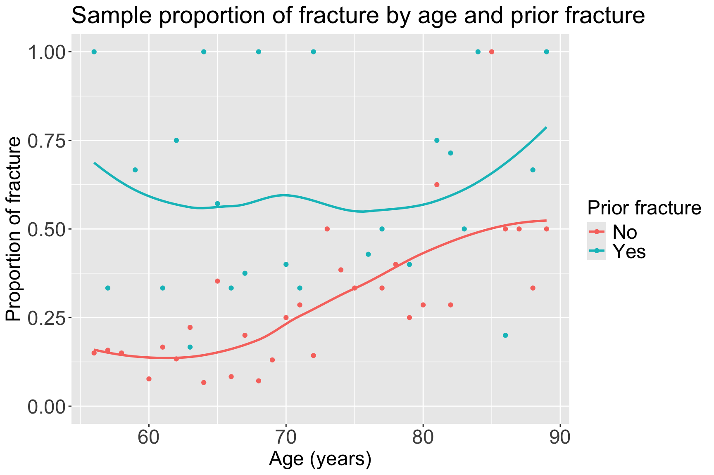
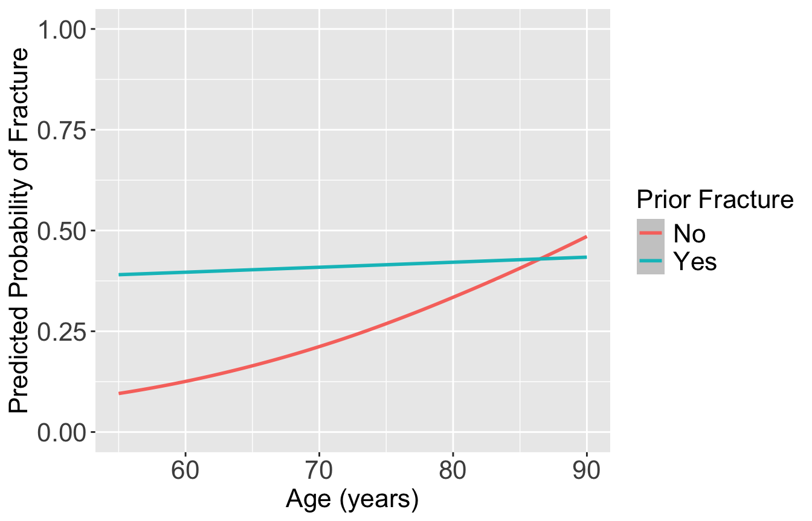

Lesson 11: Interactions
Learning Objectives
Connect understanding of confounding and interactions from linear regression to logistic regression.
Determine if an additional independent variable is a not a confounder nor effect modifier, is a confounder but not effect modifier, or is an effect modifier.
Calculate and interpret fitted interactions, including plotting the log-odds, predicted probability, and odds ratios.
Learning Objectives
- Connect understanding of confounding and interactions from linear regression to logistic regression.
Determine if an additional independent variable is a not a confounder nor effect modifier, is a confounder but not effect modifier, or is an effect modifier.
Calculate and interpret fitted interactions, including plotting the log-odds, predicted probability, and odds ratios.
Revisit from 512: What is a confounder?
A confounding variable, or confounder, is a factor/variable that wholly or partially accounts for the observed effect of the risk factor on the outcome
A confounder must be…
- Related to the outcome Y, but not a consequence of Y
- Related to the explanatory variable X, but not a consequence of X

Including a confounder in the model
- In the following model we have two variables, \(X_1\) and \(X_2\)
\[Y= \beta_0 + \beta_1X_{1}+ \beta_2X_{2} + \epsilon\]
And we assume that every level of the confounder, there is parallel slopes
Note: to interpret \(\beta_1\), we did not specify any value of \(X_2\); only specified that it be held constant
- Implicit assumption: effect of \(X_1\) is equal across all values of \(X_2\)
The above model assumes that \(X_{1}\) and \(X_{2}\) do not interact (with respect to their effect on \(Y\))
epidemiology: no “effect modification”
meaning the effect of \(X_{1}\) is the same regardless of the values of \(X_{2}\)
What is an effect modifier?
An additional variable in the model
- Outside of the main relationship between \(Y\) and \(X_1\) that we are studying
An effect modifier will change the effect of \(X_1\) on \(Y\) depending on its value
Aka: as the effect modifier’s values change, so does the association between \(Y\) and \(X_1\)
So the coefficient estimating the relationship between \(Y\) and \(X_1\) changes with another variable

Confounding vs. Interaction
Confounders: The adjusted odds ratio for one variable adjusting for confounders can be quite different from unadjusted odds ratio
- Adjusting for them is called controlling for confounding.
Interactions: When odds ratio for one variable is not constant over the levels of another variable, the two variables are said to have a statistical interaction (sometimes also called effect modification)
- i.e.: the log odds of one variable is modified/changed with different values of the other variable
- A variable is an effect modifier if it interacts with a risk factor
Note
Please refer to Lesson 11 from BSTA 512/612 – lots of information about these concepts!
How do we include an effect modifier in the model?
Interactions!!
We can incorporate interactions into our model through product terms: \[Y = \beta_0 + \beta_1X_{1}+ \beta_2X_{2} + \beta_3X_{1}X_{2} + \epsilon\]
Terminology:
main effect parameters: \(\beta_1,\beta_2\)
- The main effect models estimate the average \(X_{1}\) and \(X_{2}\) effects
interaction parameter: \(\beta_3\)
Example of interaction
- In a cohort study of elderly people the chance of death (outcome) within 2 years was much higher for those who had previously suffered a hip fracture at the start of these 2 years, but the excess risk associated with a hip fracture was significantly higher for males vs. females
- This is an interaction between hip fracture status (yes/no) and sex (unclear if assigned at birth or no)
- Odds ratio for females > odds ratio for males
Types of interactions / non-interactions
No interaction and three potential effects of interaction between two covariates A and B:
- No interaction between A and B (confounder with no interaction)
- Unilateralism: exposure to A has no effect in the absence of exposure to B, but a considerable effect when B is present.
- Synergism: the effect of A is in the same direction, but stronger in the presence of B.
- Antagonism: the effect of A works in the opposite direction in the presence of B.
Types of interactions / non-interactions

Poll Everywhere Question 1
Understand the interaction (1/3)
- Figure plots the logits (log-odds) under three different models showing the presence and absence of interaction.
- Response variable: CHD
- Risk factor: sex
- Covariate to be controlled: age
Understand the interaction (2/3)
- If age does not interact with sex, the distance between \(l_2\) and \(l_1\) is the log odds ratio for sex, controlling for age (\(l_2 - l_1\)) stays the same for all values of age.
If age interacts with sex, the distance between \(l_3\) and \(l_1\) is the log odds ratio for sex, controlling for age.
Age values need to be specified because (\(l_3 - l_1\)) differs for different values of age.
Must specify age when reporting odds ratio comparing sex

Understand the interaction (3/3)
In the real world, it is rare to see two completely parallel logit plots as we see \(l_2\) and \(l_1\)
- But we need to determine if the difference between \(l_2\) and \(l_3\) is important in the model
- We may not want to include the interaction term unless it is statistically significant and/or clinically meaningful
- Likelihood ratio test (or Wald test) may be used to test the significance of coefficients for variables of the interaction term
Poll Everywhere Question 2
Summary
In a logistic model with two covariates : \(X_1\) (the risk factor, a binary variable) and \(X_2\) (potential confounder/effect modifier)
The role of \(X_2\) can be one of the three possibilities:
Not a confounder nor effect modifier, and not significantly associated with Y
No need to include \(X_2\) in the model (for your dataset)
May still be nice to include if other literature in the field includes it
It is a confounder but not an effect modifier. There is statistical adjustment but no statistical interaction
- Should include \(X_2\) in the model as main effect
It is an effect modifier. There is statistical interaction.
- Should include \(X_2\) in the model as main effect and interaction term
Learning Objectives
- Connect understanding of confounding and interactions from linear regression to logistic regression.
- Determine if an additional independent variable is a not a confounder nor effect modifier, is a confounder but not effect modifier, or is an effect modifier.
- Calculate and interpret fitted interactions, including plotting the log-odds, predicted probability, and odds ratios.
Deciding between confounder and effect modifier
This is more of a model selection question (in coming lectures)
But if we had a model with only TWO covariates, we could step through the following process:
Test the interaction (of potential effect modifier): use a partial F-test to test if interaction term(s) explain enough variation compared to model without interaction
- Recall that for two continuous covariates, we will test a single coefficient
- For a binary and continuous covariate, we will test a single coefficient
- For two binary categorical covariates, we will test a single coefficient
- For a multi-level categorical covariate (with any other type of covariate), we must test a group of coefficients!!
Then look at the main effect (or potential confounder)
If interaction already included, then automatically included as main effect (and thus not checked for confounding)
For variables that are not included in any interactions:
- Check to see if they are confounders by seeing whether exclusion of the variable changes any of the main effect of the primary explanatory variable by more than 10%
Step 1: Testing the interaction
We test with \(\alpha = 0.10\)
Follow the LRT procedure in Lesson 6, slide 38
Use the hypothesis tests for the specific covariate combo:
Binary & continuous variable
Testing a single coefficient for the interaction term using LRT comparing full model (with interaction) to reduced model (without interaction)
Binary & continuous variables
Testing a group of coefficients for the interaction term using LRT comparing full model (with interaction) to reduced model (without interaction)
Binary & multi-level variable
Testing a group of coefficients for the interaction term using LRT comparing full model (with interaction) to reduced model (without interaction)
Two continuous variables
Testing a single coefficient for the interaction term using LRT comparing full model (with interaction) to reduced model (without interaction)
Poll Everywhere Question 2
Step 2: Testing a confounder
If interaction already included:
- Meaning: LRT showed evidence for alternative/full model
- Then the variable is an effect modifier and we don’t need to consider it as a confounder
- Then automatically included as main effect (and thus not checked for confounding)
For variables that are not included in any interactions:
- Check to see if they are confounders
- One way to do this is by seeing whether exclusion of the variable changes any of the main effect of the primary explanatory variable by more than 10%
If the main effect of the primary explanatory variable changes by less than 10%, then the additional variable is neither an effect modifier nor a confounder
- We leave the variable out of the model
Testing for percent change ( \(\Delta\%\)) in a coefficient
Let’s say we have \(X_1\) and \(X_2\), and we specifically want to see if \(X_2\) is a confounder for \(X_1\) (the explanatory variable or variable of interest)
If we are only considering \(X_1\) and \(X_2\), then we need to run the following two models:
Fitted model 1 / reduced model (
mod1): \(\text{logit}\left(\widehat\pi(\mathbf{X})\right) = \widehat\beta_0 + \widehat\beta_1X_1\)- We call the above \(\widehat\beta_1\) the reduced model coefficient: \(\widehat\beta_{1, \text{mod1}}\) or \(\widehat\beta_{1, \text{red}}\)
Fitted model 2 / full model (
mod2): \(\text{logit}\left(\widehat\pi(\mathbf{X})\right) = \widehat\beta_0 + \widehat\beta_1X_1 +\widehat\beta_2X_2\)- We call this \(\widehat\beta_1\) the full model coefficient: \(\widehat\beta_{1, \text{mod2}}\) or \(\widehat\beta_{1, \text{full}}\)
Calculation for % change in coefficient
\[ \Delta\% = 100\% \cdot\frac{\widehat\beta_{1, \text{mod1}} - \widehat\beta_{1, \text{mod2}}}{\widehat\beta_{1, \text{mod2}}} = 100\% \cdot \frac{\widehat\beta_{1, \text{red}} - \widehat\beta_{1, \text{full}}}{\widehat\beta_{1, \text{full}}} \]
Poll Everywhere Question 3
Example: GLOW Study
- From GLOW (Global Longitudinal Study of Osteoporosis in Women) study
- Outcome variable: any fracture in the first year of follow up (FRACTURE: 0 or 1)
- Risk factor/variable of interest: history of prior fracture (PRIORFRAC: 0 or 1)
Potential confounder or effect modifier: age (AGE, a continuous variable)
- Center age will be used! We will center around the rounded mean age of 69 years old
library(aplore3)
mean_age = mean(glow500$age) %>% round()
glow = glow500 %>% mutate(age_c = age - mean_age)Example: GLOW Study: Try to visual the sample proportions
- Back in BSTA 512/612, we could visual the data to get a sense if there was an interaction before fitting a model
With a binary outcome, this is a little harder
We could use a contingency table or plot proportions of the outcome
Hard to do this when our potential confounder or effect modifier is continuous
Example: GLOW Study: Calculate the proportions
glow2 = glow %>%
group_by(age, priorfrac, fracture) %>% # last one needs to be outcome
summarise(n = n()) %>%
mutate(freq = n / sum(n)) %>% # takes the proportion of yes/no
filter(fracture == "Yes") # Filtering so only "success" shown`summarise()` has grouped output by 'age', 'priorfrac'. You can override using
the `.groups` argument. #filter(freq != 1 | n != 1)
head(glow2)# A tibble: 6 × 5
# Groups: age, priorfrac [6]
age priorfrac fracture n freq
<int> <fct> <fct> <int> <dbl>
1 56 No Yes 3 0.15
2 56 Yes Yes 1 1
3 57 No Yes 3 0.158
4 57 Yes Yes 1 0.333
5 58 No Yes 3 0.15
6 59 Yes Yes 2 0.667Example: GLOW Study: Plot the proportions
ggplot(data = glow2, aes(y = freq, x = age, color = priorfrac)) +
geom_point() + ylim(0, 1) + geom_smooth(se = F) +
labs(x = "Age (years)", y = "Proportion of fracture",
color = "Prior fracture", title = "Sample proportion of fracture by age and prior fracture") +
theme(axis.title = element_text(size = 18), axis.text = element_text(size = 18),
title = element_text(size = 18), legend.text=element_text(size=18))`geom_smooth()` using method = 'loess' and formula = 'y ~ x'
- From sample proportions, looks like age and prior fracture may have an interaction!
Example: GLOW Study
We also could jump right into model fitting (connecting to the three possible roles of Age):
- Model 1: Age not included
\[\text{logit}\left(\pi(\mathbf{X})\right) = \beta_0 + \beta_1\cdot I(\text{PF})\]
- Model 2: Age as main effect (age as potential confounder)
\[\text{logit}\left(\pi(\mathbf{X})\right) = \beta_0 + \beta_1\cdot I(\text{PF}) +\beta_2\cdot Age\]
- Model 3: Age and Prior Fracture interaction (age as potential effect modifier)
\[\text{logit}\left(\pi(\mathbf{X})\right) = \beta_0 + \beta_1\cdot I(\text{PF}) +\beta_2\cdot Age + \beta_3 \cdot I(\text{PF}) \cdot Age\]
Example: GLOW Study
We also could jump right into model fitting (connecting to the three possible roles of Age):
- Model 1: Age not included
glow_m1 = glm(fracture ~ priorfrac,
data = glow, family = binomial)
- Model 2: Age as main effect (age as potential confounder)
glow_m2 = glm(fracture ~ priorfrac + age_c,
data = glow, family = binomial)
- Model 3: Age and Prior Fracture interaction (age as potential effect modifier)
glow_m3 = glm(fracture ~ priorfrac + age_c + priorfrac*age_c,
data = glow, family = binomial)Example: GLOW Study: Age an effect modifier or confounder?
- Model 1: Age not included
| term | estimate | std.error | statistic | p.value | conf.low | conf.high |
|---|---|---|---|---|---|---|
| (Intercept) | −1.417 | 0.130 | −10.859 | 0.000 | −1.679 | −1.167 |
| priorfracYes | 1.064 | 0.223 | 4.769 | 0.000 | 0.626 | 1.502 |
- Model 2: Age as main effect (age as potential confounder)
| term | estimate | std.error | statistic | p.value | conf.low | conf.high |
|---|---|---|---|---|---|---|
| (Intercept) | −1.372 | 0.132 | −10.407 | 0.000 | −1.637 | −1.120 |
| priorfracYes | 0.839 | 0.234 | 3.582 | 0.000 | 0.378 | 1.297 |
| age_c | 0.041 | 0.012 | 3.382 | 0.001 | 0.017 | 0.065 |
- Model 3: Age and Prior Fracture interaction (age as potential effect modifier)
| term | estimate | std.error | statistic | p.value | conf.low | conf.high |
|---|---|---|---|---|---|---|
| (Intercept) | −1.376 | 0.134 | −10.270 | 0.000 | −1.646 | −1.120 |
| priorfracYes | 1.002 | 0.240 | 4.184 | 0.000 | 0.530 | 1.471 |
| age_c | 0.063 | 0.015 | 4.043 | 0.000 | 0.032 | 0.093 |
| priorfracYes:age_c | −0.057 | 0.025 | −2.294 | 0.022 | −0.107 | −0.008 |
Example: GLOW Study: Age an effect modifier or confounder?
- Model 1: Age not included
| term | estimate | std.error | statistic | p.value | conf.low | conf.high |
|---|---|---|---|---|---|---|
| (Intercept) | −1.417 | 0.130 | −10.859 | 0.000 | −1.679 | −1.167 |
| priorfracYes | 1.064 | 0.223 | 4.769 | 0.000 | 0.626 | 1.502 |
- Model 2: Age as main effect (age as potential confounder)
| term | estimate | std.error | statistic | p.value | conf.low | conf.high |
|---|---|---|---|---|---|---|
| (Intercept) | −1.372 | 0.132 | −10.407 | 0.000 | −1.637 | −1.120 |
| priorfracYes | 0.839 | 0.234 | 3.582 | 0.000 | 0.378 | 1.297 |
| age_c | 0.041 | 0.012 | 3.382 | 0.001 | 0.017 | 0.065 |
- Model 3: Age and Prior Fracture interaction (age as potential effect modifier)
| term | estimate | std.error | statistic | p.value | conf.low | conf.high |
|---|---|---|---|---|---|---|
| (Intercept) | −1.376 | 0.134 | −10.270 | 0.000 | −1.646 | −1.120 |
| priorfracYes | 1.002 | 0.240 | 4.184 | 0.000 | 0.530 | 1.471 |
| age_c | 0.063 | 0.015 | 4.043 | 0.000 | 0.032 | 0.093 |
| priorfracYes:age_c | −0.057 | 0.025 | −2.294 | 0.022 | −0.107 | −0.008 |
Is age an effect modifier?
Test the significance of the interaction term in Model 3
We can use the Wald test or LRT
- If not an effect modifier, check the change in coefficient for prior fracture between Model 1 and Model 2
Example: GLOW Study: Age an effect modifier or confounder?
- Model 1: Age not included
| term | estimate | std.error | statistic | p.value | conf.low | conf.high |
|---|---|---|---|---|---|---|
| (Intercept) | −1.417 | 0.130 | −10.859 | 0.000 | −1.679 | −1.167 |
| priorfracYes | 1.064 | 0.223 | 4.769 | 0.000 | 0.626 | 1.502 |
- Model 2: Age as main effect (age as potential confounder)
| term | estimate | std.error | statistic | p.value | conf.low | conf.high |
|---|---|---|---|---|---|---|
| (Intercept) | −1.372 | 0.132 | −10.407 | 0.000 | −1.637 | −1.120 |
| priorfracYes | 0.839 | 0.234 | 3.582 | 0.000 | 0.378 | 1.297 |
| age_c | 0.041 | 0.012 | 3.382 | 0.001 | 0.017 | 0.065 |
- Model 3: Age and Prior Fracture interaction (age as potential effect modifier)
| term | estimate | std.error | statistic | p.value | conf.low | conf.high |
|---|---|---|---|---|---|---|
| (Intercept) | −1.376 | 0.134 | −10.270 | 0.000 | −1.646 | −1.120 |
| priorfracYes | 1.002 | 0.240 | 4.184 | 0.000 | 0.530 | 1.471 |
| age_c | 0.063 | 0.015 | 4.043 | 0.000 | 0.032 | 0.093 |
| priorfracYes:age_c | −0.057 | 0.025 | −2.294 | 0.022 | −0.107 | −0.008 |
Is age an effect modifier?
Test the significance of the interaction term in Model 3
We can use the Wald test or LRT
- If not an effect modifier, check the change in coefficient for prior fracture between Model 1 and Model 2
Short version of testing the interaction: Wald statistic for the interaction coefficient, \(\widehat{\beta}_3\), is statistically significant with \(p= 0.022\). Thus, there is evidence of a statistical interaction between these age and prior fracture.
Poll Everywhere Question 4
Please please please reference your work from BSTA 512/612
We had lessons and homeworks dedicated to this process!
The process will be the same!
- Only differences are t-test and F-test are replaced by Wald test and Likelihood ratio test, respectively!!
Learning Objectives
Connect understanding of confounding and interactions from linear regression to logistic regression.
Determine if an additional independent variable is a not a confounder nor effect modifier, is a confounder but not effect modifier, or is an effect modifier.
- Calculate and interpret fitted interactions, including plotting the log-odds, predicted probability, and odds ratios.
Example: GLOW Study
- Age is an effect modifier of prior fracture
- When a covariate is an effect modifier, its status as a confounder is of secondary importance since the estimate of the effect of the risk factor depends on the specific value of the covariate
Must summarize the effect of prior fracture on current fracture by age
- Cannot summarize as a single (log) odds ratio
Example: GLOW – Interaction interpretation
- Model 3: \[\begin{aligned} \text{logit}\left(\widehat\pi(\mathbf{X})\right) & = \widehat\beta_0 &+ &\widehat\beta_1\cdot I(\text{PF}) & + &\widehat\beta_2\cdot Age& + &\widehat\beta_3 \cdot I(\text{PF}) \cdot Age \\ \text{logit}\left(\widehat\pi(\mathbf{X})\right) & = -1.376 &+ &1.002\cdot I(\text{PF})& + &0.063\cdot Age& -&0.057 \cdot I(\text{PF}) \cdot Age \end{aligned}\]
| term | estimate | std.error | statistic | p.value | conf.low | conf.high |
|---|---|---|---|---|---|---|
| (Intercept) | −1.376 | 0.134 | −10.270 | 0.000 | −1.646 | −1.120 |
| priorfracYes | 1.002 | 0.240 | 4.184 | 0.000 | 0.530 | 1.471 |
| age_c | 0.063 | 0.015 | 4.043 | 0.000 | 0.032 | 0.093 |
| priorfracYes:age_c | −0.057 | 0.025 | −2.294 | 0.022 | −0.107 | −0.008 |
Example: GLOW – Interaction interpretation
- Model 3 estimated coefficients:
| term | estimate | p.value | conf.low | conf.high |
|---|---|---|---|---|
| (Intercept) | −1.376 | 0.000 | −1.646 | −1.120 |
| priorfracYes | 1.002 | 0.000 | 0.530 | 1.471 |
| age_c | 0.063 | 0.000 | 0.032 | 0.093 |
| priorfracYes:age_c | −0.057 | 0.022 | −0.107 | −0.008 |
- Model 3 estimated odds ratios:
| term | estimate | p.value | conf.low | conf.high |
|---|---|---|---|---|
| (Intercept) | 0.25 | 0.00 | 0.19 | 0.33 |
| priorfracYes | 2.72 | 0.00 | 1.70 | 4.35 |
| age_c | 1.06 | 0.00 | 1.03 | 1.10 |
| priorfracYes:age_c | 0.94 | 0.02 | 0.90 | 0.99 |
\(\widehat\beta_3 = -0.057\)
The effect of having a prior fracture on the log odds of having a new fracture decreases by an estimated 0.057 for every one year increase in age (95% CI: 0.008, 0.107).
- Aka the log odds of a new fracture comparing prior fracture to no prior fracture gets closer to one another as age increases
\(\widehat\beta_1 = 1.002\)
For individuals 69 years old, the estimated difference in log odds for a new fracture is 1.002 comparing individuals with a prior fracture to individuals with no prior fracture (95% CI: 0.530, 1.471).
\(\exp(\widehat\beta_1) = 2.72\)
For individuals 69 years old, the estimated odds of a new fracture for individuals with prior fracture is 2.72 times the estimated odds of a new fracture for individuals with no prior fracture (95% CI: 1.70, 4.35).
Poll Everywhere Question 5
Plot of estimated log odds
prior_age = expand_grid(priorfrac = c("No", "Yes"), age_c = (55:90)-69)
frac_pred_log = predict(glow_m3, prior_age, se.fit = T, type="link")
pred_glow2 = prior_age %>% mutate(frac_pred_log = frac_pred_log$fit,
age = age_c + mean_age)
ggplot(pred_glow2) + #geom_point(aes(x = age, y = frac_pred, color = priorfrac)) +
geom_smooth(method = "loess", aes(x = age, y = frac_pred_log, color = priorfrac)) +
theme(text = element_text(size=20), title = element_text(size=16)) +
labs(color = "Prior Fracture", x = "Age (years)", y = "Log-Odds of Fracture")`geom_smooth()` using formula = 'y ~ x'
Poll Everywhere Question 6 (Bonus q if we’re feeling it)
Plot the predicted probability of fracture
frac_pred = predict(glow_m3, prior_age, se.fit = T, type="response")
pred_glow = prior_age %>% mutate(frac_pred = frac_pred$fit,
age = age_c + mean_age)
ggplot(pred_glow) + #geom_point(aes(x = age, y = frac_pred, color = priorfrac)) +
geom_smooth(method = "loess", aes(x = age, y = frac_pred, color = priorfrac)) +
theme(text = element_text(size=20), title = element_text(size=16)) + ylim(0,1) +
labs(color = "Prior Fracture", x = "Age (years)", y = "Predicted Probability of Fracture")`geom_smooth()` using formula = 'y ~ x'
Odds Ratio in the Presence of Interaction (1/2)
- When interaction exists between a risk factor (F) and another variable (X), the estimate of the odds ratio for F depends on the value of X
When an interaction term (F*X) exists in the model
- \({\widehat{OR}}_F \neq \exp(\widehat\beta_F)\) in general
Assume we want to compute the odds ratio for (\(F = f_1\) and \(F = f_0\), the correct model-based estimate is \[\begin{aligned} {\widehat{OR}}_F = &\exp{\left(\hat{g}\left(F=f_1,X=x\right)-\hat{g}\left(F=f_0,X=x\right)\right)} \end{aligned}\]
- Let’s work this out on the next slide!
Odds Ratio in the Presence of Interaction (2/2)
- We may write the two logits (log-odds) for given x as below:
\[ \begin{aligned} \hat{g}\left(F = f_1,X = x\right)&={\hat{\beta}}_0+{\hat{\beta}}_1f_1+{\hat{\beta}}_2x+{\hat{\beta}}_3f_1\cdot\ x \\ \hat{g}\left(F = f_0,X=x\right)&={\hat{\beta}}_0+{\hat{\beta}}_1f_0+{\hat{\beta}}_2x+{\hat{\beta}}_3f_0\cdot\ x \end{aligned}\]
- The difference in two logits (log-odds) is:
\[ \begin{aligned} \hat{g}\left(f_1,x\right)-\hat{g}\left(f_0,x\right) & = \left[{\hat{\beta}}_0+{\hat{\beta}}_1f_1+{\hat{\beta}}_2x+{\hat{\beta}}_3f_1\cdot\ x \right] - \left[{\hat{\beta}}_0+{\hat{\beta}}_1f_0+{\hat{\beta}}_2x+{\hat{\beta}}_3f_0\cdot\ x \right] \\ \hat{g}\left(f_1,x\right)-\hat{g}\left(f_0,x\right) & = \hat{\beta}_1 f_1- \hat{\beta}_1f_0 + \hat{\beta}_3 x f_1 - \hat\beta_3 x f_0\\ \hat{g}\left(f_1,x\right)-\hat{g}\left(f_0,x\right) & = {\hat{\beta}}_1\left(f_1-f_0\right)+{\hat{\beta}}_3x\left(f_1-f_0\right) \end{aligned}\]
- Therefore,
\[\widehat{OR}(F=f-1, F=f_0, X=x) = \widehat{OR}_F = \exp\left[ {\hat{\beta}}_1\left(f_1-f_0\right)+{\hat{\beta}}_3x\left(f_1-f_0\right) \right]\]
Steps to compute OR under interation
- Note: You don’t need to know the math itself, but I think it’s helpful to think of it this way
Identify two sets of values that you want to compare with only one variable changed
- In previous slides, one set was \((F=f_1, X=x)\) and the other was \((F=f_0, X=x)\)
Substitute values in the fitted log-odds model
- You should have two equations, one for each set of values
Take the difference of the two log-odds
Exponentiate the resulting difference
Example: GLOW Study
Identify two sets of values that you want to compare with only one variable changed
Set 1: \(PF = 1, Age = a\)
Set 2: \(PF = 0, Age = a\)
- Substitute values in the fitted log-odds model
\[\text{logit}\left(\widehat\pi(\mathbf{X})\right) = \widehat\beta_0 + \widehat\beta_1\cdot I(\text{PF}) + \widehat\beta_2\cdot Age + \widehat\beta_3 \cdot I(\text{PF}) \cdot Age\] \[\begin{aligned} \text{logit}\left(\widehat\pi(PF = 1, Age = a)\right) =& \widehat\beta_0 + \widehat\beta_1\cdot 1 + \widehat\beta_2\cdot a + \widehat\beta_3 \cdot 1\cdot Age \\ =& \widehat\beta_0 + \widehat\beta_1 + \widehat\beta_2\cdot a + \widehat\beta_3\cdot a \end{aligned}\]
\[\begin{aligned} \text{logit}\left(\widehat\pi(PF = 0, Age = a)\right) =& \widehat\beta_0 + \widehat\beta_1\cdot 0 + \widehat\beta_2\cdot a + \widehat\beta_3 \cdot 0\cdot Age \\ =& \widehat\beta_0 + \widehat\beta_2\cdot a \end{aligned}\]
Example: GLOW Study
- Take the difference of the two log-odds
\[\begin{aligned} \left[logit\left(\pi\left(PF=1,\ Age=a\right)\right)\right]- & \left[logit\left(\pi\left(PF=0,\ Age=a\right)\right)\right] \\ & =\left[{\hat{\beta}}_0+{\hat{\beta}}_1+{\hat{\beta}}_2a+{\hat{\beta}}_3a\right]-\left[{\hat{\beta}}_0+{\hat{\beta}}_2a\right]\\ &={\hat{\beta}}_1+{\hat{\beta}}_3a \end{aligned}\]
- Exponentiate the resulting difference
\[\widehat{OR}\left[\left(PF=1,\ Age=a\right),\left(PF=0,\ Age=a\right)\right]=exp\ \left({\hat{\beta}}_1+{\hat{\beta}}_3a\right)\]
We can put in values for age to see how the OR changes
If we let \(a = 60\), i.e., compute OR for age = 60, then \[{\widehat{OR}}_{a=60}=\exp(1.002-0.057\cdot(60-69))\ =4.55\]
If we let \(a = 70\), i.e., compute OR for age = 70, then \[{\widehat{OR}}_{a=70}=\exp(1.002-0.057\cdot(70-69))\ =2.57\]
Calculate odds ratios across values
prior_age = expand_grid(priorfrac = c("No", "Yes"), age_c = (55:90)-69)
frac_pred_logit = predict(glow_m3, prior_age, se.fit = T, type="link")
pred_glow2 = prior_age %>% mutate(frac_pred = frac_pred_logit$fit,
age = age_c + mean_age) %>%
pivot_wider(names_from = priorfrac, values_from = frac_pred) %>%
mutate(OR_YN = exp(Yes - No))
head(pred_glow2)# A tibble: 6 × 5
age_c age No Yes OR_YN
<dbl> <dbl> <dbl> <dbl> <dbl>
1 -14 55 -2.25 -0.446 6.08
2 -13 56 -2.19 -0.441 5.74
3 -12 57 -2.13 -0.436 5.42
4 -11 58 -2.06 -0.430 5.12
5 -10 59 -2.00 -0.425 4.83
6 -9 60 -1.94 -0.420 4.56Plotting the odds ratio for an interaction
ggplot(pred_glow2) +
geom_hline(yintercept = 1) +
geom_smooth(method = "loess", aes(x = age, y = OR_YN)) +
theme(text = element_text(size=20), title = element_text(size=16)) +
labs(x = "Age (years)", y = "Estimated odds ratio", title = "Odds ratio of fracture outcome comparing \n prior fracture to no prior fracture")`geom_smooth()` using formula = 'y ~ x'How would I report these results?
- Remember our main covariate is prior fracture, so we want to focuse on how age changes the relationship between prior fracture and a new fracture!
For individuals 69 years old, the estimated odds of a new fracture for individuals with prior fracture is 2.72 times the estimated odds of a new fracture for individuals with no prior fracture (95% CI: 1.70, 4.35). As seen in Figure 1 (a), the odds ratio of a new fracture when comparing prior fracture status decreases with age, indicating that the effect of prior fractures on new fractures decreases as individuals get older. In Figure 1 (b), it is evident that for both prior fracture statuses, the predict probability of a new fracture increases as age increases. However, the predicted probability of new fracture for those without a prior fracture increases at a higher rate than that of individuals with a prior fracture. Thus, the predicted probabilities of a new fracture converge at age [insert age here].
`geom_smooth()` using formula = 'y ~ x'
`geom_smooth()` using formula = 'y ~ x'